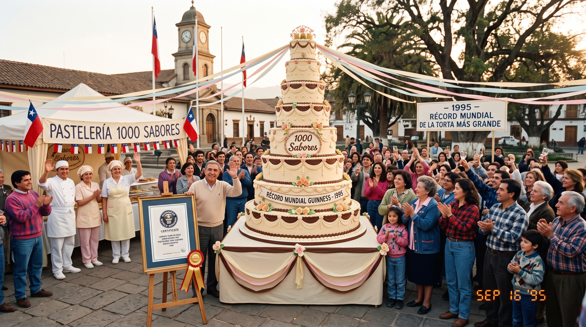
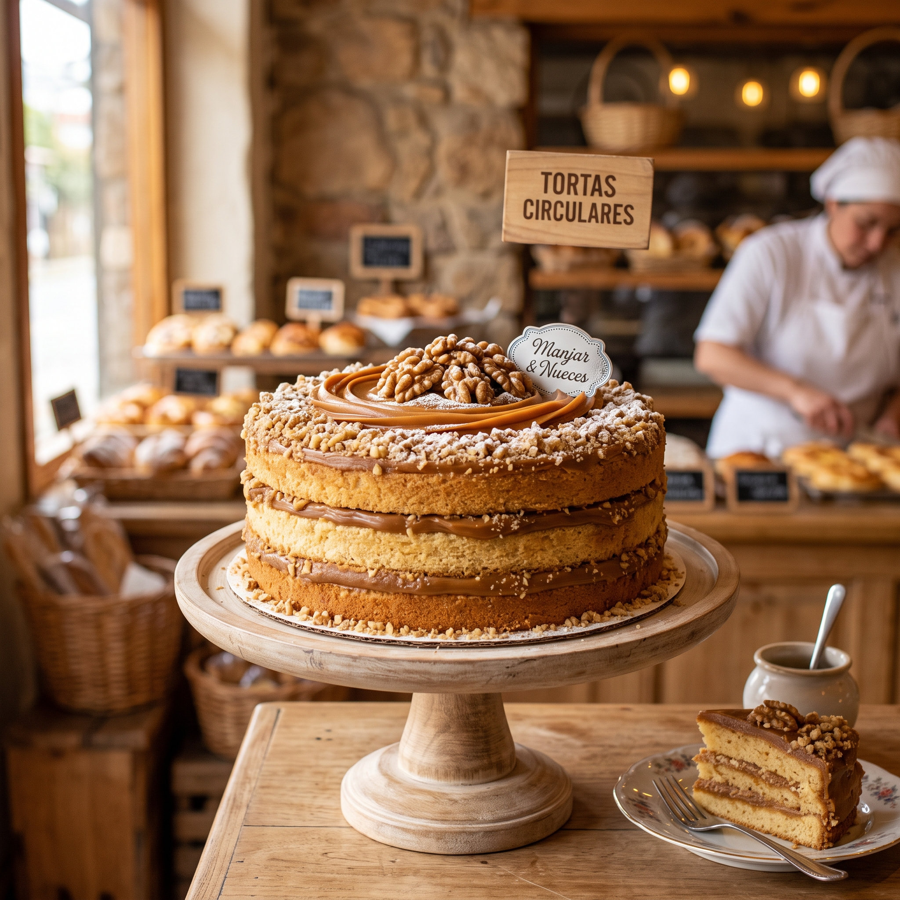
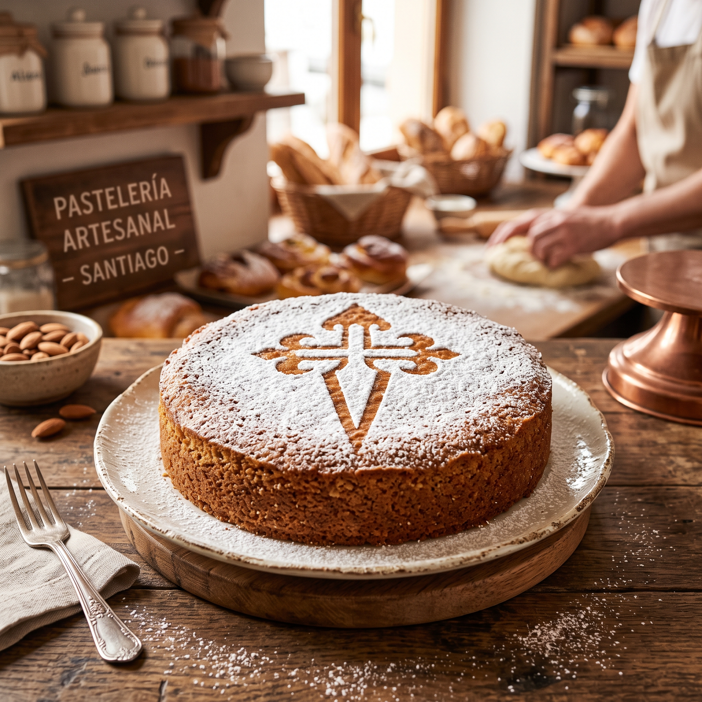
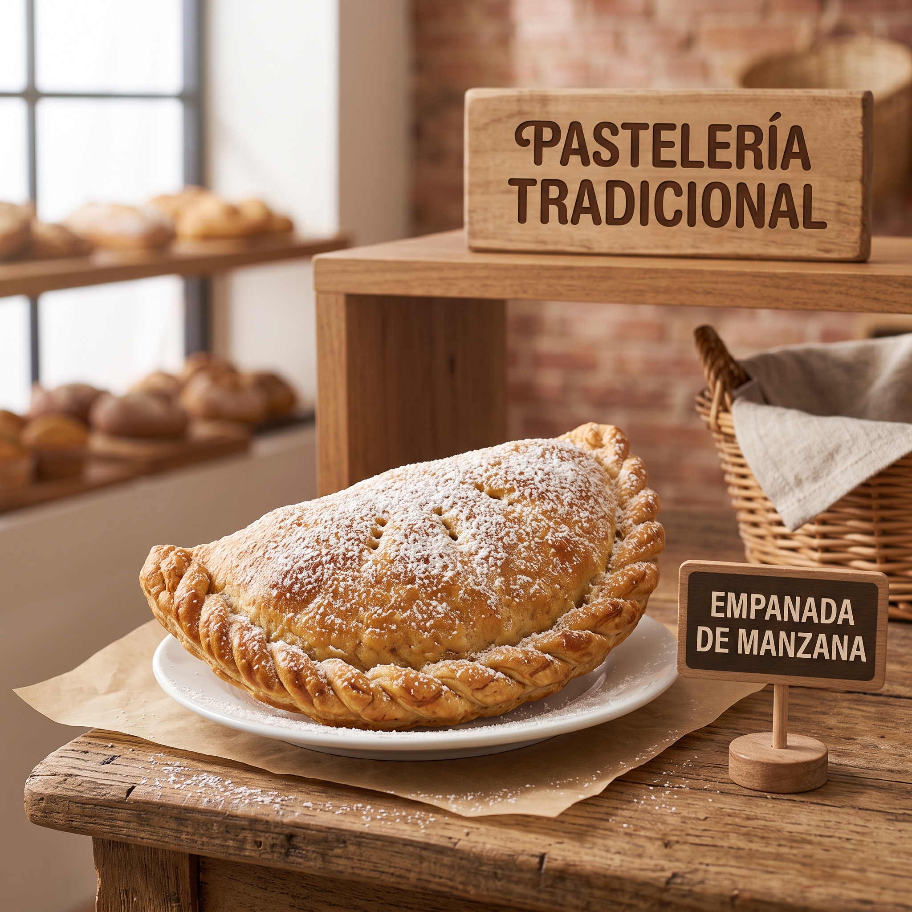
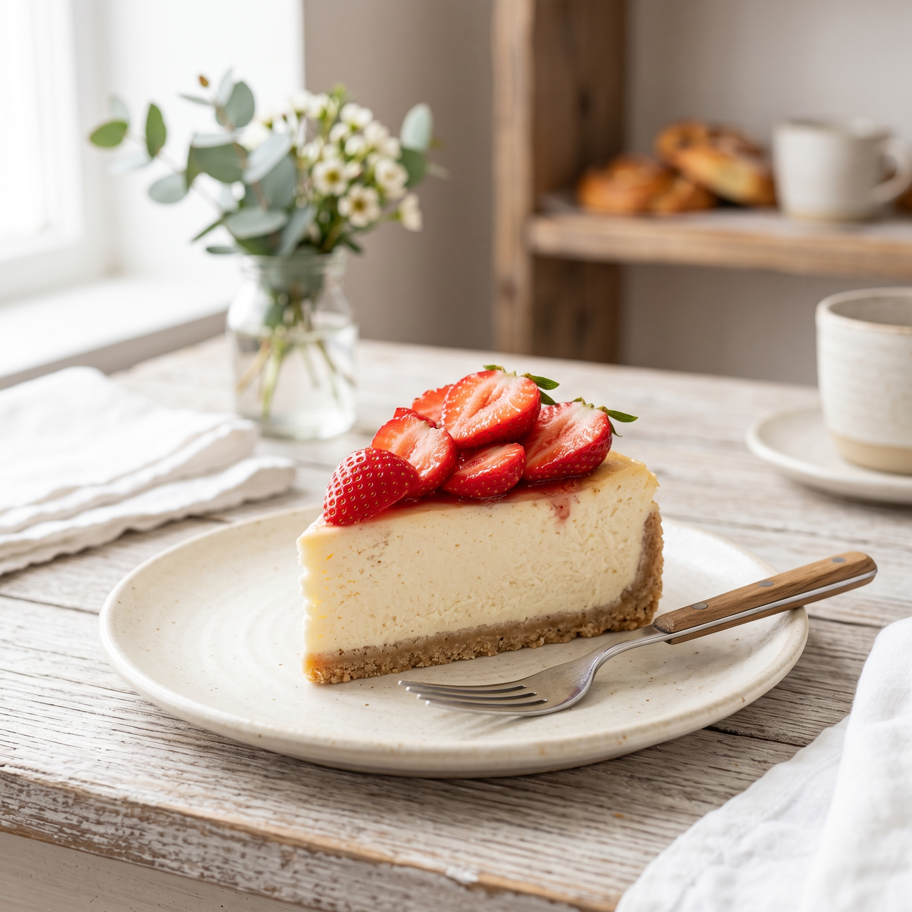
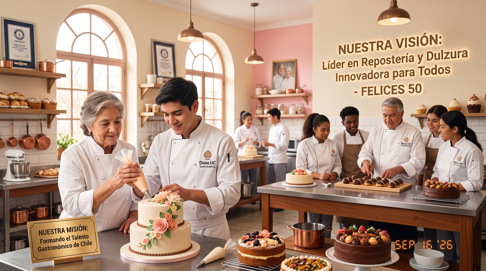

Pasteleria Mil Sabores
Historia y Record Guinness
"Desde hace 50 años, Pastelería 1000 Sabores ha sido parte del corazón de la repostería chilena. Un hito imborrable en nuestra historia ocurrió en 1995, cuando colaboramos con orgullo en la creación de la torta más grande del mundo, hito reconocido en el Récord Guinness. Esta pasión por los desafíos dulces y por compartir con la comunidad sigue viva en cada receta que elaboramos día a día."

Origen de productos y recetas tradicionales
Torta Circular de Manjar y Nueces: Elaborada siguiendo la auténtica receta artesanal chilena, utilizando manjar casero cocinado a fuego lento y nueces seleccionadas de la zona central.

Tarta de Santiago: Inspirada en la repostería tradicional española, elaborada a base de almendras molidas, huevos y azúcar, coronada con la emblemática Cruz de Santiago en azúcar flor.

Empanada de Manzana Speciada: Receta clásica de la repostería criolla chilena que combina manzanas horneadas con toques de canela y una masa suave y hojaldrada.

Líneas Dietéticas y Especiales (Sin Azúcar, Sin Gluten y Vegana): Adaptaciones modernas de nuestras recetas de antaño que sustituyen ingredientes sin perder la textura esponjosa y el sabor característico de 50 años de tradición.

Misión y Visión
Misión: Ofrecer una experiencia dulce y memorable a nuestros clientes, proporcionando tortas y productos de repostería de alta calidad para todas las ocasiones, mientras celebramos nuestras raíces históricas y fomentamos la creatividad en la repostería.
Convertirnos en la tienda online líder de productos de repostería en Chile, conocida por nuestra innovación, calidad y el impacto positivo en la comunidad, especialmente en la formación de nuevos talentos en gastronomía.
